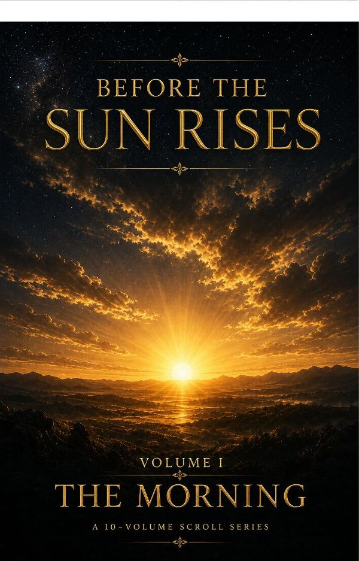

Before the Sun Rises — Volume One: The Morning
The morning is not a time of day. It is a governance structure.
Free edition being preparedNight, Star, Gathering, Exposure, Return. Recovers the morning as a covenant window, not a devotional habit: from the evening-and-morning structure of Genesis 1 through the manna law to the resurrection morning that ends all mornings.
Scripture
Exodus 16:21Lamentations 3:22–232 Peter 1:19Genesis 1:5Mark 16:2